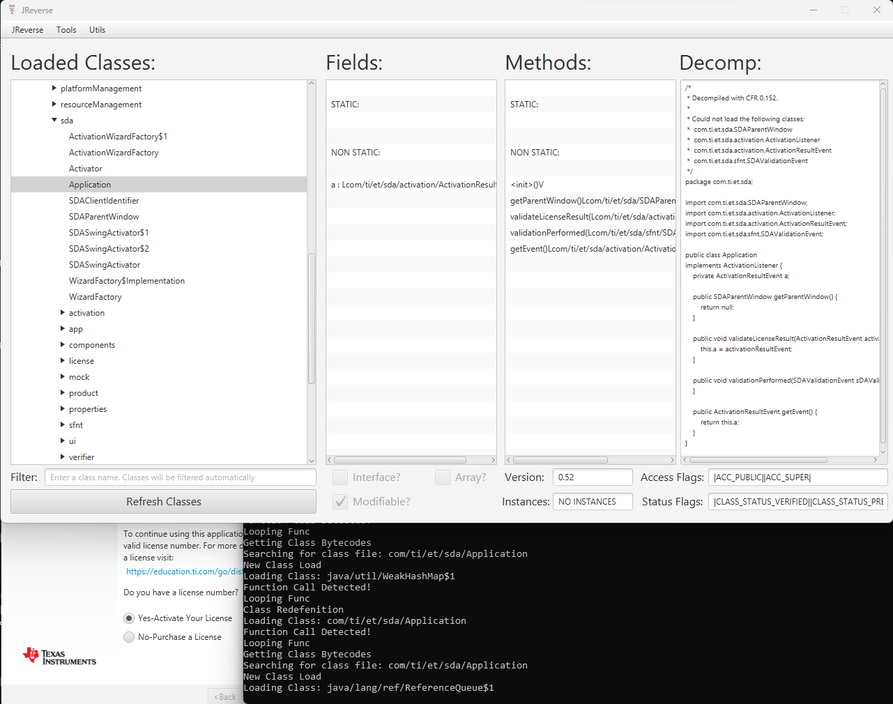

Introduction
Loading...
A Handwritten Diagram Of JReverse's Old IPC Pipeline
Early Development
Loading...

Footage of one of the first tests on the IPC system, to load class names.
Main Development
Loading...

The main page of JReverse inaction
Now
Loading...